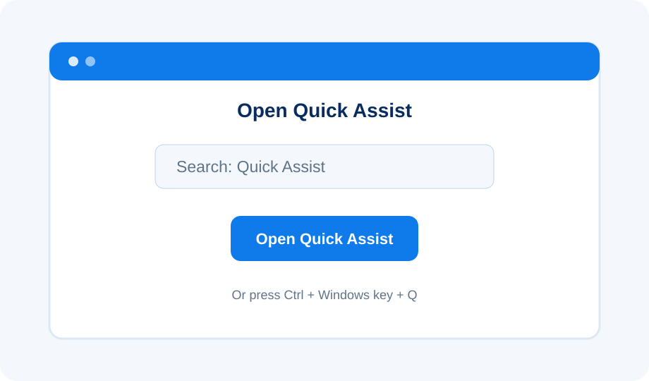
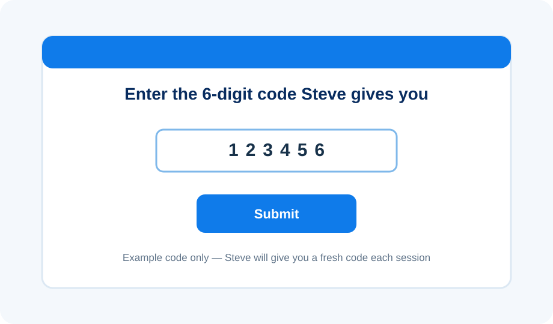
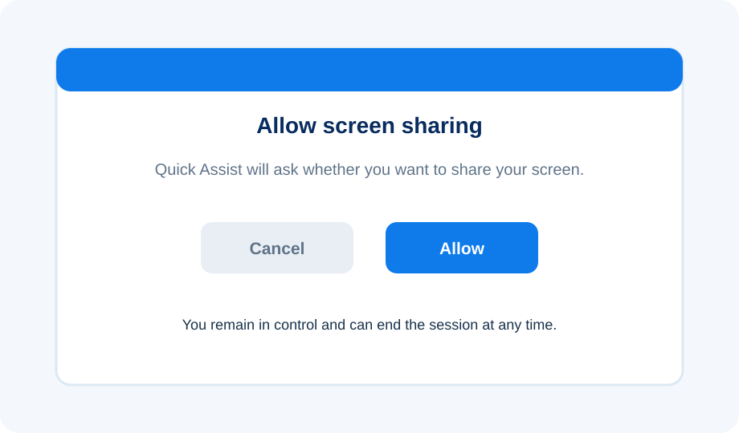
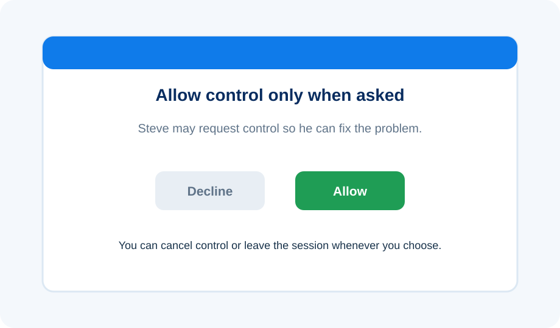

1
Open Quick Assist
Click Start, type Quick Assist and open the app. You can also press Ctrl + Windows key + Q.

Help without waiting for a home visit
With Microsoft Quick Assist, I can securely view your Windows PC — and, only with your permission, control it — while you watch what I’m doing.
Remote support is intended for Windows 10 and Windows 11 PCs using Microsoft Quick Assist.
Before we connect
Call, WhatsApp or email me first. I will talk through the problem and decide whether remote support is suitable. If it is, I will generate a fresh six-digit Quick Assist code for your session.
Four simple steps
The pictures below are Ask Steve illustrations of the process rather than exact Microsoft screenshots, so wording and appearance may vary slightly with your version of Windows.
Click Start, type Quick Assist and open the app. You can also press Ctrl + Windows key + Q.

Type the fresh code I give you into the Code from assistant box, then select Submit. Quick Assist codes are session-specific.

Windows will ask whether you want to share your screen. Select Allow only when you are expecting me to connect.

I may ask for full control so I can make changes or fix the problem. Quick Assist will ask you to approve this separately. You remain able to cancel control or leave the session.

What I can help with remotely
Your security comes first
Microsoft also advises people to use Quick Assist only with someone they trust because a helper can see the screen and, if permission is granted, control the PC.
Having trouble opening Quick Assist?
Quick Assist is normally available through the Microsoft Store. On some PCs it may need installing or updating. Microsoft Edge WebView2 is also required, although it is normally already present on Windows 11 and PCs using Microsoft Edge.
Work or school-managed computers may prevent Quick Assist from being installed. In that situation, your organisation’s IT administrator may need to help.
Ready for remote help?
Contact me first and I’ll talk you through the whole connection process.